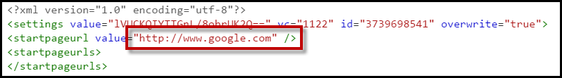
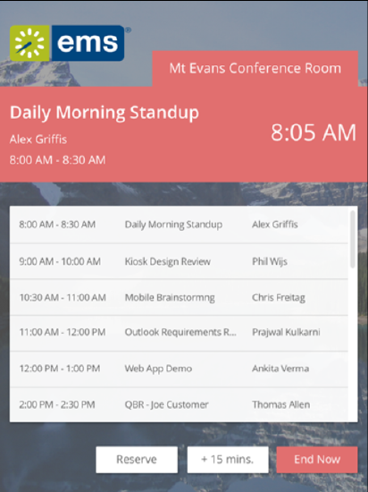

Deploying the on Tablets
Overview
To deploy the (formerly named EMS Glance), you need to prevent users from using the tablet to browse to other websites or use other tablet apps. This state—where tablets are restricted to a single use—is known as kiosk mode. iOS offers a native kiosk mode known as Guided Access. Android and Windows do not have a native kiosk mode and require a third party application. For Android, we recommend KioWare Lite. Below we detail how to configure the EMS Room Sign App in kiosk mode on iPads and the Samsung Tab A Android tablets.
In addition to placing the tablet in kiosk mode, you should also use an enclosure to protect the tablet. An enclosure prevents users from using the power/home buttons, and also protects the tablet from theft. We strongly recommend the ArmorActive enclosures. As of September 2016, ArmorActive is our official hardware partner, and they can help you source both tablets and enclosures.
This topic will include the following information:
Configure Kiosk Mode for iPads
To ensure the operates without interruptions, we recommend you hide the browser's address bar and navigation buttons, and turn off tablet notifications.
1. Hide Browser Address Bar and Navigation Buttons. This setup is also known as "full-screen mode." To run the EMS Room Sign App in full-screen mode on an iPad:
- Open the Safari browser and enter the URL for your the EMS Room Sign App server. (Contact your system administrator for the URL.)
- Click Share (located to the right of the address bar) and select Add to Home Screen.
- Choose a name for the icon (such as "EMS Room Sign App") and select Add.
- The icon for the EMS Room Sign App appears on the iPad home screen, showing the name you just specified.
- Click the EMS Room Sign App icon to open the EMS Room Sign App in full screen mode, which makes the navigation bar and Safari menu options inaccessible.
2. Turn off Tablet Notifications. To minimize interruptions by iOS, change the following settings in the 'Settings' app:
- Control Center: Turn off Access on Lock Screen and Access Within Apps to eliminate access to the Control Center from within apps and the lock screen.
- Notifications: Turn off all notifications for all apps.
- General / Auto-Lock: Select Never to prevent the screen from locking.
- General / Accessibility / Guided Access: enabling Guided Access prevents users from accessing the Notification Center and from using the tablet to access any other application except the EMS Room Sign App. (However, Guided Access ends when the tablet restarts, which happens after a software update, a loss of power, or simultaneously pressing the Home and Sleep/Wake buttons for 10 seconds.) To set up Guided Access:
- General / Accessibility / Guided Access: Turn on 'Guided Access.'
- General / Accessibility / Guided Access / Passcode Settings / Set Guided Access Passcode: Enter a 4-digit passcode so that you can enable and disable Guided Access mode.
- Click Home and click the EMS Room Sign App icon to start the EMS Room Sign App.
- With the EMS Room Sign App running, triple-click the Home button. This can be tricky because if you click too slowly, the iPad goes back to the Home screen, and if you click too quickly, the iPad does not detect a triple-click. You'll know you are successful when the screen changes to show "Guided Access" at the top center of the screen.
- Click Start at the top right corner of the 'Guided Access' screen.
- Enter the passcode you created earlier.
- To confirm that you set it up correctly, swipe down from the top to open the Notifications Center and swipe up from the bottom to open the Control Center. If neither of them opens, then you have set up Guided Access correctly.
- iCloud: Turn off iCloud by going to Settings / iCloud, and selecting Sign Out at the bottom of the screen. By signing out, you prevent future notifications that prompt you to sign in.
Configure Kiosk Mode for Android Tablets
Android tablets do not offer a Guided Mode like iPads do. Because of this limitation on Android tablets, you must deploy the EMS Room Sign App with an app that puts the tablets in "kiosk" mode. Placing the tablet in kiosk mode will prevent users from accessing other applications and also disable the Home button. We recommend KioWare Lite for Android.
Configure KioWare Lite
KioWare Lite reads settings from an XML file. We strongly recommend configuring KW such that this file is placed on a central server, and tablets download the file from that server. This approach will make any updates easier because you will be able to update a single file rather than make changes on each tablet. Note that the initial provisioning will still require you to configure each tablet individually.
To configure and provision KioWare, follow these steps on a Samsung Tab A running Android 6.0 or higher:
- Purchase the required number of licenses from Kioware.com. Save the KioWare transaction number and authorization code. (If you use their volume purchasing path, you should end up with just one of each code for the entire deployment.)
- Open the Kioware Provision.xml file and update the following section with the transaction and authorization code:

-
Open the Kioware_Settings.xml file and make the following changes:
-
Change the URL to the location for your Room Sign App installation:

- Update the URL for the server where the Kioware_Settings.xml will be placed.
Verify that you can access to this file from a desktop browser
If you are placing this file in the Room Sign folder on your web server, remember that when you upgrade this file will be removed.
-
Place the Kioware_Settings.xml file in the location you just specified.
-
On the tablet, create a Kioware_Provision folder under the root directory and copy both the Kioware_Provision.xml and Kioware_Settings.xml to that directory.
-
To create that folder, you can go to Settings > Storage > Other, ‘More’ in the top right, and then ‘Create folder.’ This process should create the folder in the root directory, under ‘Device storage.’ The new folder will be visible in the pane to the left.
-
You can copy those files by connecting the tablet to your computer with a micro-USB cable.
-
Install KioWare on the tablet
-
If you are downloading the app file from KioWare’s website (rather than going through the Android app store), you should Go to 'Settings'/'Lock screen and security', and allow installation of apps from unknown sources.
-
After successfully installing, set Kioware as your ‘Home’ app. There are two ways this might happen:
-
The first time you press the Home button, you should see an option to set the home button as KioWare.
-
Or you can go to Settings/Applications/Default applications and set KioWare as the Home application
When you download and install Kioware, we recommend the following settings:
General Settings:
- Start Page URL: Set this to the EMS Room Sign App URL. That is typically
http://your_web_server/EMSRoomSignApp.
- Start on Boot: Select this option so that the tablet will return to the EMS Room Sign App if is restarted. Users will not be able to access the home screen.
- Screen Orientation: the EMS Room Sign App can be used in either portrait or landscape orientations.
- Prevent Screen Sleep: Select 'Disable Screen Timer and Power Button' so that the EMS Room Sign App remains active on the screen.
Browser Settings:
- Ensure 'Enable Browser Zoom' is checked. That is, zooming is enabled.
- Other than this setting, you can use the default settings on this page.
- Enter the 'Browser Cache/Data' sub-menu. In this sub-menu, only the following options are selected:
- Enable Cookies
- Enable Application Cache (under HTML 5 Web Storage)
- Clear HTML 5 Storage at Session End (under HTML 5 Web Storage)
| |
Note: It will be more difficult to upgrade the Room Sign App if you select more options because KioWare will store old settings.
|
Attract/Inactivity Settings:
- Set the 'Default Inactivity Timer' to 0 seconds.
Toolbar Settings:
- Disable Action Bar, Progress Bar, Android Back Arrow, Home Button, and everything under the 'Standard Buttons' section
- Enable 'Use Immersive Mode.' This option improves the full-screen browsing experience.
Security Settings:
- Exit Passcode: set a 4-digit passcode. This code is used to exit the EMS Room Sign App (being run inside the KioWare kiosk app). When the EMS Room Sign App is running, tap the four corners of the screen starting in the top-left and going clockwise to the bottom left. You will then be able to enter the passcode.
- Hide System Dialogs: Select this option.
- Disable Status Bar: Select this option.
Note: The Kioware_Settings.xml file initially sets the exit passcode to 0000. To change this value, you will need to deploy KioWare to a single tablet, open Kioware Config, import the Kioware_Settings.xml file, change the passcode, and export the new settings file to use in your deployment.
Orientation Views for the EMS Room Sign App
Starting in Update 12, the EMS Room Sign App can be mounted in either landscape or portrait mode.
- Landscape mode displays a timeline, and allows users to quickly see when a room is available. However, users will have to tap on a booking to view more information.
- Portrait mode displays an agenda view (see image below). Users will see what meetings are scheduled in the room for the day. However, they will not have a simple visual display of room availability. For this reason, admins might want to consider deploying portrait mode for rooms that are 'view-only.'
Portrait Orientation (Agenda View) versus Landscape Orientation (Timeline View)
 
Mount the EMS Room Sign App in an Enclosure
Our customers typically place their EMS Room Sign App tablets in enclosures and mount them on walls. Mounting on drywall is fairly easy, but you will have to do some research if you want to mount on wood or glass.
You should also consider how to supply power to your tablets. Our customers typically choose enclosures that allow them to use PoE (Power over Ethernet) to provide power.
iPads can connect to networks only via wireless; Apple does not support connecting iPads to Ethernet cables.
Please consider the ArmorActive enclosures. In particular, ArmorActive offers an enclosure for the iPad Mini, which offers optional LED indicators that the EMS Room Sign App supports to indicate whether or not the room is available. ArmorActive also makes an enclosure for the Samsung Tab A, which we support and recommend. Contact your Account Executive for more information on these enclosures.
Kioware_Provision.xml
KioWare_Settings.xml